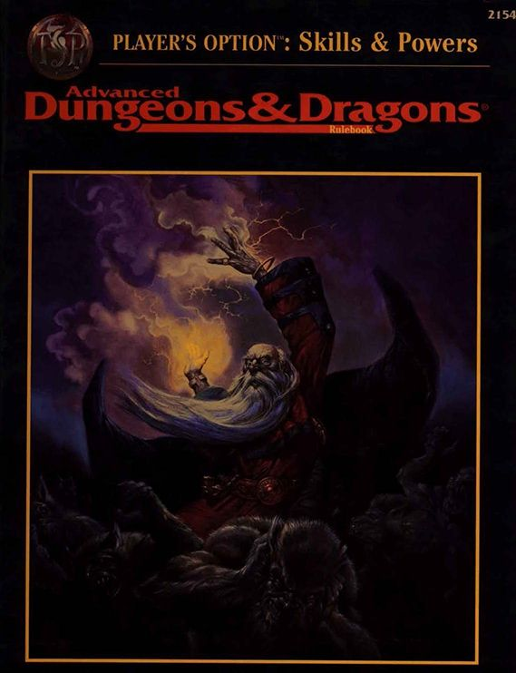
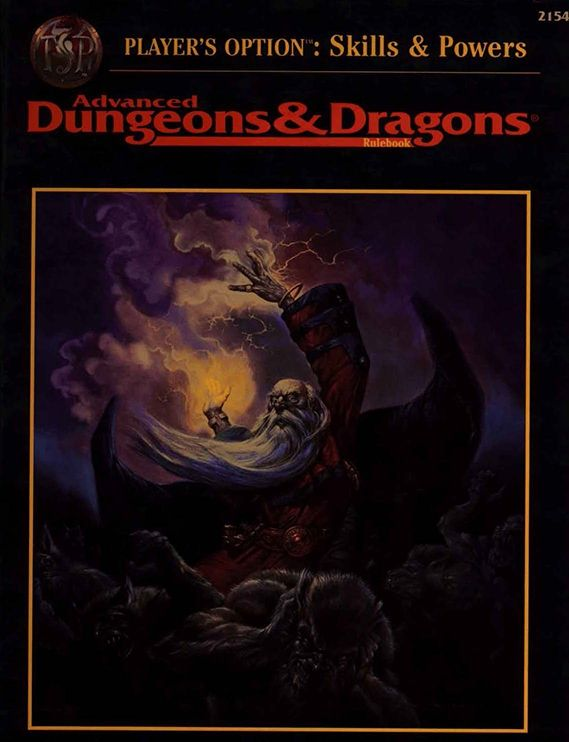

Edition: 5
Although Wizards Of The Coast tried to make Fourth Edition a success (and it was a good system, despite the hate) they quickly realized they had to correct their course. In 2012, they announced an unprecedented community-driven playtest, D&D Next, for Fifth Edition. Taking player feedback and heavy internal development, they created Dungeons & Dragons Fifth Edition which constituted a return to form for the franchise. The intent was to create an edition of Dungeons & Dragons that combined the best elements of every previous version. Favorite mechanics were streamlined; for example, AD&D had included Proficiency Bonuses that granted characters better results with their favored weapon types. Fifth Edition gives each character a single Proficiency Bonus that is applied to anything they're considered good at, whether it's a particular weapon, a skill, or a lucky set of lockpicks.

Edition: 3.5
After a development period in which D&D was redesigned from the ground up, Third Edition launched. It kept the three-rulebook system but dispensed with the clunky THAC0 system. Armor Class now went up, simplifying the game for new players who would naturally be inclined to associate a higher number with a better stat. While the original Ability Scores and the method for generating them were largely intact, the raw scores were rarely - if ever - used to determine the outcome of an action. Instead, each Ability Score had an Ability Score Modifier derived from it which was added or subtracted to die results. Wizards' version of the game also introduced Skills, which determined how good characters were at the fundamental aspects of adventuring. Previously, these had been largely derived from Ability Scores or simply roleplayed.